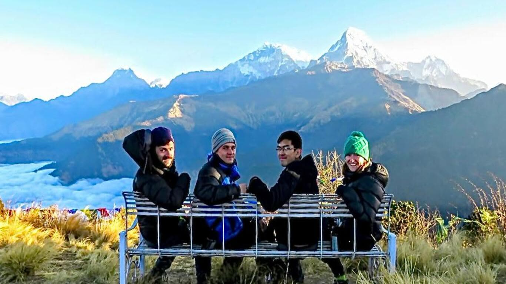
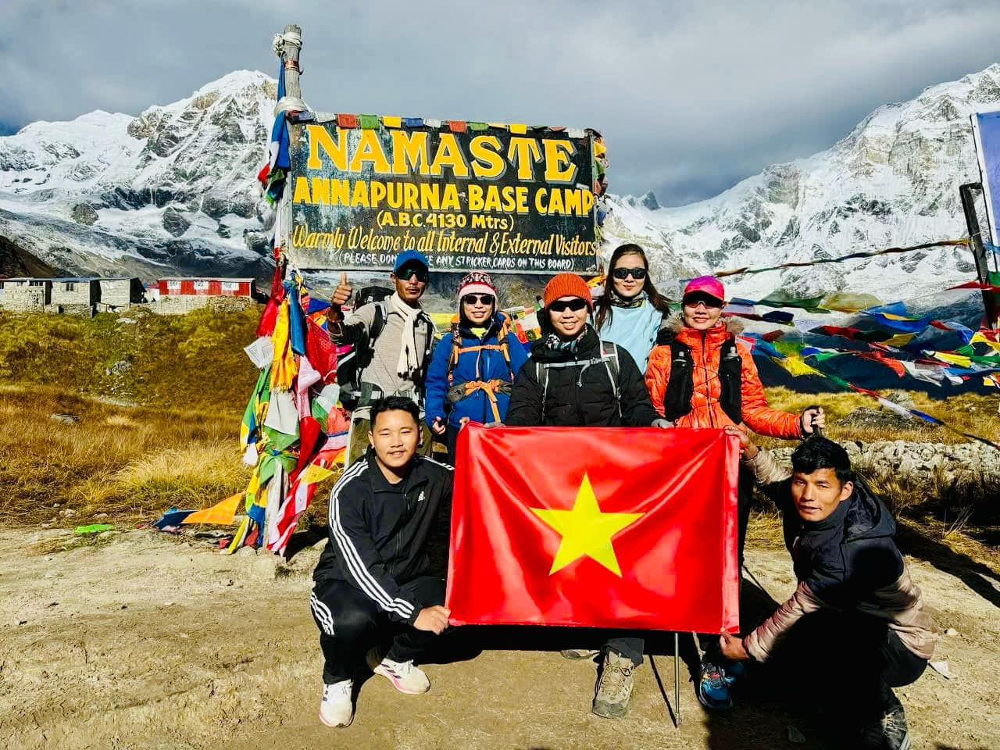
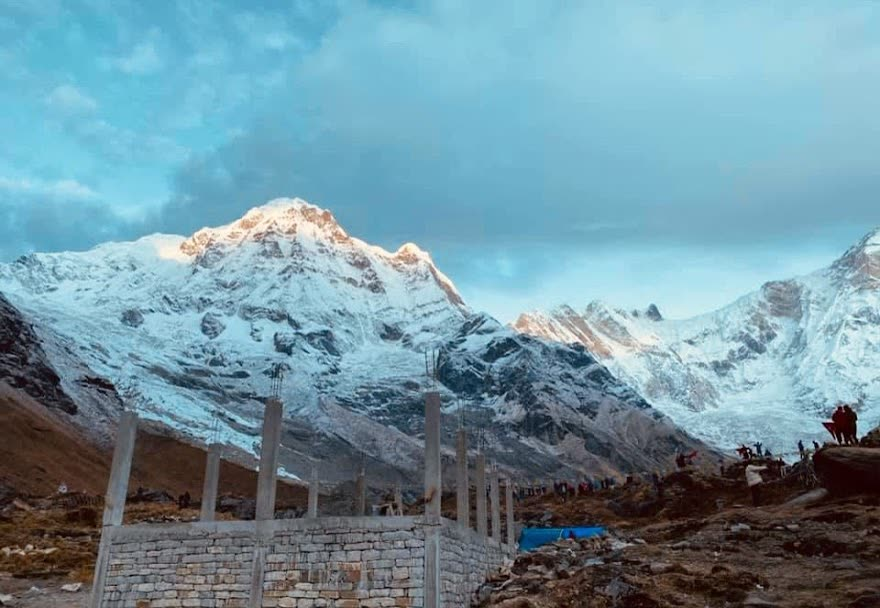
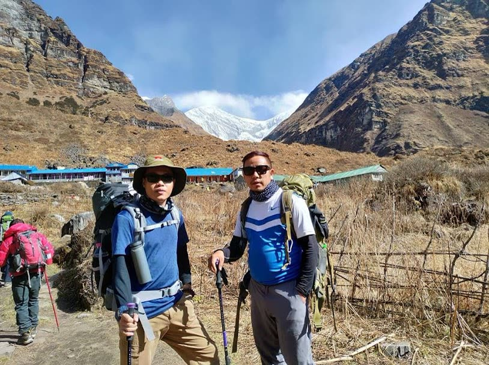
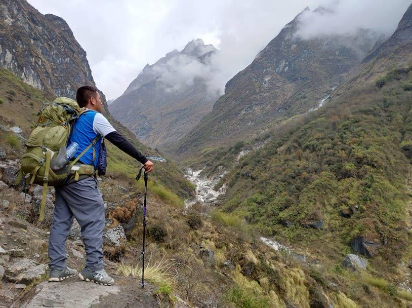
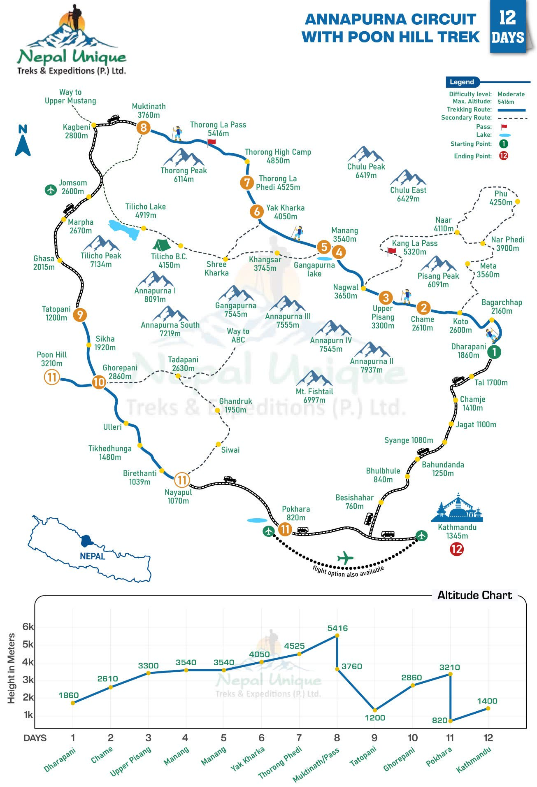

Annapurna Base Camp with Poon Hill Trek
Annapurna Base Camp with Poon Hill Trek is one of the most demanded trekking destinations in the Annapurna Region, which lies in the western part of Kathmandu, and here are Itinerary & Cost for 2026. This trek allows you to explore the Annapurna Panoramic Himalayan range.





Key Trip Facts
Trek Overview
Trip Highlights
Annapurna Base Camp Trek with PoonHill Overview
Annapurna Base Camp with Poon Hill Trek is one of the most demanded trekking destinations in the Annapurna Region, which lies in the western part of Kathmandu, and here are Itinerary & Cost for 2026. This trek allows you to explore the Annapurna Panoramic Himalayan range. This trek starts from Kathmandu via Pokhara.
Arrive in Kathmandu and meet with a trekking agency that organizes your Annapurna Base Camp with Poonhill Trek. Complete the agreements and introduce yourself to your trek crew. Trek goes via Pokhara. There are two alternative ways to reach Pokhara. Option no. 1: By road, a 210 km drive takes 8/9 hours. Option two is by flight, and it takes 30 minutes.
The first day of trekking will lead you to Pokhara, a tourist city and the main point to start and end the Annapurna trek. Before or after trekking, tourists love to stay and enjoy Pokhara, because Pokhara is a developed city with many facilities for visitors. Also, there is an ancient pilgrimage site and a naturally beautiful city. That's why Pokhara is the first attraction for Visitors.
The second day of the trek brings you to Ulleri Village, 1575 m. After breakfast, your guide will manage transportation to go to Ulleri Village. It goes through Nayapul, Birethati, Ramghai, and Hile. From Pokhara, an hour's drive to arrive at Ulleri Village. Then visit the local village and spend the night in the Guesthouse.
The Annapurna Base Camp with Poon Hill Trek offers you a magnificent view of the Annapurna Himalaya, Poonhill is another attraction of this trek because from there you will see a dramatic sunrise view of the Annapurna Himalaya range. If visitors have limited time, then the 3-day Poonhill trek is best for them.
Poon Hill Viewpoint is a famous place to see the sunrise and the mountain view from where more than 20 snow peaks can be seen. Which are Mt Dhawalagiri, Tukuche Peak, Dhampus Peak, Gangapurna, Nilgiri, Annapurna South, Fishtail, Manaslu Himal, Lamjung Himal, etc. Those who dream of visiting the Annapurna Base Camp Trek and would like to do longer trekking will continue to Annapurna Base Camp through Tadapani, Chhomrong, and MBC.
The Annapurna Base Camp Trek belongs to Annapurna Conservation (ACAP). There are some trekking destinations included, like the Annapurna Base Camp Trek, Mardi Himal Trek, Ghorepani Poonhill Trek, Annapurna Circuit Trek, Tilicho Lake Trek, Mohare Dada Trek, Khayar Trek, and Lower Mustang Treks, etc. All trekking destinations have their own culture, traditions, and religions; they have massive Himalayan views and the beauty of nature.
During this trek, you will pass many Community villages. Where Gurung people are settled, they depend economically on the British Army (Gorkha Soder), tourism, and Agriculture. These people have an amazing tradition and respect guests as gods. The Gurung People are very helpful,
Also, people call the Annapurna Sanctuary Trek and Annapurna Circuit Trek because these treks take you inside the Annapurna Conservation Area. Annapurna region treks are famous for beautiful nature, different types of flora and fauna, and the cultural villages of Gurung and Magar. These are all attractions of this trek.
After reaching your dream destination, Annapurna Base Camp 4130m, you feel that you have won the world and are proud of yourself. This is a piece of cake in the world, and that's why people love to come here to explore the Himalayas. Nepal itself University of Adventurous, where many adventure lovers come to teach and learn.
When you return from the Annapurna Base Camp, you may capture the view that you left before. The trekking trails lead back to Pokhara via Bambo and Jhinu. Pokhara is the best place to recover your energy and kill your pain. Then your trek ends in Pokhara, so you may celebrate with your team, who helped you to make a successful Annapurna Base Camp Trek.
The Annapurna Base Camp Trek Difficulty
Annapurna Base Camp Trek difficulty is moderate. Comparatively lower elevation than the Annapurna Circuit, but physically challenging because there is a lot of ascent and descent. For this trek, trekkers must be healthy without any major health problems and need good hiking stamina because every day we must walk six to seven hours.
Best season to Trek in Annapurna Base Camp
The best season to Trek in Annapurna Base Camp is September, October, November, and December, which are the autumn seasons in Nepal. This time, we can see a clear sky and greenery, all types of vegetation, and we will see beautiful Mountain views because of the past monsoons.
March, April, and May are Spring Sessions. Many types of flowers are colorful and blooming, spring season mainly Rhododendron flowers, which give another beauty. You can see snowcapped mountains, blue sky with great visibility,
Accommodation during the Annapurna Base Camp Trek
Annapurna Base Camp Trek starts via Ghorepani, Tadapani, Chhomrong, Bambo, Himalaya, and Machhapuchhre Base Camp. During this trek, we can stay in a shared, clean, and comfortable guesthouse. These days are better than ten years ago. Most of the guest houses are made of stone, Cement, plywood, and have tin roofs. In Ghorepani, Ghandruk, and Chhomrong have attached rooms are available, but you must book early for your comfortable stay.
Above the Chhumrong Village or during the Annapurna Base Camp Trekking routes, it is difficult to find private rooms during the high season, so you must share a room with unknown people if you are traveling alone. A comfortable bed, clean bed sheet, pillow, and blankets are provided by the guest house. One blanket is not enough after Bambo, so we must bring your sleeping bags for a warm sleep.
The Trail to Annapurna Base Camp
As we leave Ulleri, our feet advance on such a part of the world that seems like a picture painted by nature itself. Starting with an easy walk over wide paths, you can sense the Himalayan cool breeze thickening as you gain altitude. Furthermore, walking through lush rhododendron forests, pine trees, and, of course, inside the Annapurna Conservation Area takes you so close to nature.
A little bit of strenuous journey with a lot to witness, watch, see, and admire- that's what the trail to Annapurna Base Camp looks like. Whether you are trekking for the first time. been in the Himalayas for the first time or are a seasoned trekker, this trail offers something for each mountain enthusiast. On our way to the Annapurna Base Camp, we also walked on some traditionally built stone staircases framed by terraced farms and stone-made houses. Besides the Annapurna Base Camp, we also visited the Machhapucchre Base Camp and PoonHill Viewpoint.
Moreover, people also call this trek the Annapurna Sanctuary Trek because this trek takes you inside the Annapurna Conservation Area. Annapurna region treks are famous for beautiful nature, different types of flora and fauna, and cultural villages of Gurung and Magar.
The PoonHill Viewpoint
Poon Hill Viewpoint is a famous place to see the sunrise and the mountain view. From here, you can witness over 20 snow-covered peaks. The Himalayas are Mt Dhawalagiri, Tukuche Peak, Dhampus Peak, Gangapurna, Nilgiri, Annapurna South, Fishtail, Manaslu Himal, Lamjung Himal, and many more. Located at an altitude of 3210 meters above sea level, this viewpoint seriously feels like heaven on earth. The Nepal Unique Treks & Expedition guides take you on the final stretch to the PoonHill Viewpoint early in the morning.
ABC Trek with PoonHill Permits
Obtaining trekking permits is the first and most important preparation one needs to do before going on the trek. As the Annapurna Base Camp Trek with PoonHill Hike takes you through different villages, development committees, and restricted areas, trekkers must obtain some specific permits to enter these areas.
Here are the permits that you will need for the 10-Day ABC PoonHill Trek:
Trekkers' Information Management System (TIMS): With this card, the authorities can track and manage trekkers during the journey.
Annapurna Conservation Area Permit (ACAP): This permit is required for trekkers to enter the Annapurna Conservation Area.
Both of these permits can be obtained from the Nepal Tourism Board Office in both Kathmandu and Pokhara. Also, if you book the package with us, our representatives will assist you in obtaining the permits as well.
ABC with PoonHill Trek Costs 2026 and 2027
The cost of the Annapurna Base Camp Trek with PoonHill hike can vary based on different factors, including the number of people in the group, services expected by the trekkers, and several more. With Nepal Unique Treks and Expeditions, we make sure to provide trekkers with affordable and reasonable costs for the ABC with PoonHill Trek in 2026 and 2027.
Annapurna Base Camp with Poon Hill Trek Itinerary: Day by Day
10 Days program for Annapurna Base Camp with Poon Hill Trek. Daily timings and sequences remain flexible according to weather, flight operations, and group pace.
Day 1: Drive from Kathmandu to Pokhara by tourist bus 210km, 8 hours, Overnight Pokhara, and 810m.
Approx. 810 m / 2,657 ft
After an early Breakfast in the Hotel, drive from Kathmandu to Pokhara via Prithibi Highway, 210km and it takes approximately eight hours. During the drive, you will see beautiful white water rafting rivers, agriculture fields, and green lush Himalayas. Early evening you will reach Pokhara Hotel. You may enjoy dinner in a tourist town lakeside and overnight sleep at a Hotel.
Day 2: Pokhara to Ulleri 3 Hours’ drive by local jeep, 2070m.
Approx. 2,070 m / 6,791 ft
After Breakfast, visit the World Peace Stupa, from where you can see the majestic view of Fewa Lake, Pokhara Valley with Annapurna Range. Drive back to Gupteswar Mahadev Cave, visit David Falls and International Mountain Museum, Enjoy lunch on the lakeside, and then straight drive to Ulleri Village 2070 m. It takes 3 hours from Pokhara. In the Ulleri Village Magar people community has beautiful traditions and local cultures, before take dinner walk around and explore locally with your guide.
Day 3: Trek from Ulleri to Ghorepani 2874m, 5 Hours.
Approx. 2,874 m / 9,429 ft
Take breakfast in the open sky from where you can see a beautiful valley with Annapurna South and stunning sunrise views, after breakfast your guide will lead the trek to Ghorepani, Trek into the rainforest via beautiful spring rivers and a forest of Rhododendron Flowers. Approximately five five-hour trek will take you to Ghorepani village. If good weather you will see magnificent sunsets and Mt Dhaulagiri, Annapurna Himalayan range, It will be a fabulous evening, and have dinner in a guesthouse and overnight sleep at Ghorepani.
Day 4: Visit Poon Hill 3210m, Trek to Tadapani 2630m, 6 hours.
Approx. 2,630 m / 8,629 ft
Wake up at 4 am and start hiking to Poon Hill. It takes one hour approximately Poon Hill is suited to 3210m, from the sea level. This is a famous viewpoint for Sunrise, Sunset, and Mountain views, from where we can see more than twenty snow-peaks, you will see dramatically Annapurna Himalayan range with a sunset view. Which makes fabulous your day? Trek back to the Guesthouse and start your trek to Tadapani after Breakfast. Trek from Ghodepani to Tadapani is also an enjoyable trekking route because of the Rhododendron flowers, Bambo Tree, and Magnificent Mountain View. It takes six hours to reach Tadapani. Enjoy the evening view from Tadapani and a delicious local dinner in the Guesthouse.
Day 5: Trek from Tadapani to Chhomrong Village 2170m, 7 Hours.
Approx. 2,170 m / 7,119 ft
Sunrays hit the Machhapuchhre and Annapurna South and it makes a beautiful Morning, Strat trek from Tadapani after breakfast, the first part of trekking we must walk 30 minutes a gentle downhill to the Chuile village, then one hour straight downhill to the Bhujung Khola, Cross the suspension bridge, then 40 minutes uphill brings you to the Local village, Today's trek is physically difficult because you have to cross so many hills, there are beautiful local villages with agricultural fields that are the reason why you may not feel tired. Early Afternoon you will arrive in Chumroong Village, Evening time stroll around there, and after dinner sleep at the guesthouse.
Day 6: Trek from Chhomrong to Himalaya 2890m, 6/7 Hours.
Approx. 2,890 m / 9,482 ft
After Breakfast, your guide will check in your trekking permits at the Annapurna conservation office, Twenty-five minutes downhill trek, then cross the suspension bridge, and the trek continue through the Lower Sinuwa, Upper Sinuwa, and Bambo villages, to the Himalayan Hotel. Today's trek mostly ascends until the Himalayas, during today's trek, we will see beautiful waterfalls, a Bamboo forest, and Rhododendron flowers, the six-hour trek will bring you to the Himalayas, and overnight sleep at the Teahouse.
Day 7: Trek from Himalaya to Annapurna Base Camp 4130m, 6 Hours.
Approx. 4,130 m / 13,550 ft
Take breakfast in a teahouse with an incredible sunrise view, Today you are reaching the final destination, which is dreaming for a long time, it will have come true dreams. Trek continues to the Annapurna Base Camp via Machhapuchhre Base Camp, a tea break in MBC, and another few hours of challenges to reach the dream destination. Today you will see magnificent god-gifted natural views. that is the reason why today is a special day of the trek. After an hour's trek, you will arrive at Annapurna Base Camp 4130m, check in the teahouse, and enjoy Lunch, Early afternoon 3 pm make the history of your lifetime by visiting Annapurna Base Camp, and our guide will congratulate you on your achievements, Share the happiness and tell the truth to worlds Annapurna Base Camp Trek is Amazing place on earth. You are in the mountain now which is 4130 m from sea level, when people trek first-time above three thousand meters people can get sick by altitude, so tonight is challenging for you if you have some altitude problems. Our health is more important than other things so we that keep in touch with guides and share our problems, I am sure you will not get those problems because you are born for it. We suggest you drink enough water and keep warm your body, after dinner sleep in the Teahouse.
Day 8: Trek Base Camp to Bambo 2350m, 6 hours from Annapurna.
Approx. 2,350 m / 7,710 ft
Surprise Morning view with stunning sunrise and gorgeous Mountain View, before breakfast visit again Annapurna Base Camp and leave the footprints and take memories. Today we are heading back to Bambo, we will walk on seem trails but you will enjoy the view. When you trek down to a lower elevation automatically feel strong and comfortable because of enough oxygen. Trek from ABC to Bambo for approximately 6/7 hours, Overnight sleep at Bambo.
Day 9: Bambo to Jhinu Dada 1780m, 6 Hours.
Approx. 1,780 m / 5,840 ft
Finally, Annapurna Base Camp with Poon Hill Trek has been ending today at Jhinu Dada; Trekking from Bambo to Jhinu Dada takes six hours. Early afternoon visit the natural Hot spring and take a bath to kill you’re tired and pain. Last night's dinner with your team, they helped you to reach ABC carrying your duffel bags. Share the trekking experience and celebrate the last day trek. The Porter will be very happy if you buy some drinks and they will appreciate your tipping, Drink, and dance with the porter they feel proud of their job if you make them happy. And indirectly it will be a huge contribution to look after his kids and family. Goodnight!
Day 10: Drive from Jhinu Dada to Pokhara 810, 3 Hours
Approx. 810 m / 2,657 ft
After breakfast, the drive from Jhinu Dada to Pokhara takes three hours. Check in at the Hotel and relax for your day in Pokhara. if you need more service or to visit other destinations from Pokhara, please let us know or WhatsApp us at +977 9851023285 (Dil Gurung) Trip Planner.
What is Included (Regular Package)
What is Excluded
Booking Dates & Availability
Packing List for Annapurna Base Camp with Poon Hill Trek
Essential Info: Down jackets and sleeping bags can be rented/arranged per package inclusions.High-Altitude Trail Gear (6 items)
Cold-Weather Layering System (5 items)
Sleep, Health & Permits (3 items)
Read before you book: Annapurna Base Camp with Poon Hill Trek
Practical logistics derived directly from this package's route facts, inclusions, and elevation profile.
Accommodation & Meals (Hotel, Guesthouse)
Accommodation follows the package grade (Hotel, Guesthouse) in Kathmandu and along the Annapurna route. Check your package Includes section for included meals and Kathmandu hotel nights.
Permits & Local Logistics
Transportation is arranged via Car, Van, Bus. Applicable permits listed in the package inclusions are arranged by Nepal Unique Treks prior to departure.
Route Difficulty & Elevation (4,130 m)
Annapurna Base Camp with Poon Hill Trek is rated Adventure with a maximum elevation of 4,130 m. Follow your guide's pacing and stay hydrated throughout the 10 Days itinerary.
Best Time to Visit (March and April)
Recommended operating season on the source page: March and April. Additional official notes from the source page follow below.
Traveller Useful Information
If you plan to go on any treks or long journeys in Nepal, choose the right season. Selecting the best season can assist you with the entire journey. Moreover, you can also witness drastic changes in the trekking conditions if you choose the right season for the ABC PoonHill Trek. Being a locally-established trekking agency, we advise Spring (March to May) and Autumn (September to November) as the most ideal seasons for the ABC with PoonHill Trek.
Spring Season (March to May)
- This season stands as the best among the best seasons for most of the trekking routes in Nepal.
- The temperature remains mild, which ensures rhododendron blooms and very clear skies.
- During these months, you can also expect generally stable weather with fewer chances of rain or snow. Due to that, this season also provides amazing visibility.
- However, the trekkers can also expect a crowded trail as many people choose this season for trekking in the ABC with the PoonHill trail.
Autumn Season (September to November)
- Typically, the second most ideal season for any trek in Nepal.
- Again, the weather stays stable, offering outstanding views of the clear skies, mountains, and overall surrounding environment.
- Unlike in the spring season, the trails remain less crowded in the Autumn season. Therefore, you can enjoy a comparatively peaceful trek.
- As autumn comes just after monsoon, you can expect the trail to be dust-free and greener than any other season.
Other Seasons
Besides the two most favorable seasons for the ABC Trek with PoonHill Hike, there are also some other seasons when we operate the booking. However, these seasons, due to different factors, do not stand among the best. For example, during the summer or monsoon season, the journey can be very difficult due to heavy rainfall. Moreover, the dark cloud formation also blocks the view, and rain makes the entire route very slippery.
Besides, if you choose the winter season (December to February), the temperature decreases significantly, causing snowfall and icy roads, and leading to very challenging conditions. However, we do not say that trekking in these seasons is completely impossible. Nevertheless, you must be prepared with specialized gear and proper training for that.
The Annapurna Base Camp Trek with PoonHill Hike's difficulty level is considered to be moderately difficult. This means that with proper basic preparation followed by physical and mental fitness, ascending this trail is possible. However, trekkers must also be aware of proper acclimatization during the trek. Not to worry, because Nepal Unique Treks has the perfect itinerary planned for your safety and convenience.
So what are the major factors behind this trek's moderate difficulty level? Here they are:
Altitude: The Annapurna Base Camp Trek with PoonHill Hike ascends 4130 meters above sea level. Due to that, the trekkers will have to face different high-altitude difficulties like altitude sickness, strenuous walking, tiredness, etc.
Distance and Duration: Remember that the ABC PoonHill route is about 110 km long, which requires us to walk for about 5 to 6 hours on average for 8 out of 10 days.
Landscapes and Remoteness: As the trail ascends, we enter alpine terrain, which involves a lot of ups and downs, numerous stone stairs, making it a little strenuous, especially in Ulleri and Poonhill. This also makes the walk difficult in several sections.
As the ABC Trek with PoonHill hike goes through some of the remote and rural parts of the Himalayas, many trekkers think that food and accommodation might not be as expected or at least not fulfilling and satisfying enough. However, let us tell you that Nepal Unique Treks arranges highly fulfilling food and accommodations throughout the trekking journey.
During the trek, you can expect accommodation in three-star level hotels or locally-run tea houses. Regardless of the hotel that you choose to stay at, these hotels and guesthouses offer good food, clean and cozy rooms, comfortable beds, and different facilities. These facilities include WiFi, internet, hot water for showers, and exceptional room services as well.
Besides, the hotels and guesthouses also provide three meals a day, which include breakfast, lunch, and dinner. Starting from local cuisines, including Dal Bhat (rice and lentil soup), noodles, chowmein, and other international cuisines, you can get all of these. However, we inform you that beer or any other alcoholic beverages will not be included in the package cost. Therefore, we recommend that you carry some extra cash.
As this is a moderately difficult trek, the trekkers do not have to go for a very detailed, difficult, or hardcore preparation for this. With some basic but smart preparation, any trekker or nature enthusiast can be ready for the ABC with the PoonHill Trekking tour. Well, here are the most important ways to prepare yourself for this trip:
Research and Planning
The most crucial thing one must do for any trek, including the ABC with PoonHill Trekking journey, is some research and planning. You must be aware of the itineraries, food, accommodation, permits needed, etc. Moreover, the trekkers shall also plan for proper acclimatization during the trek and know at least a bit about the culture, lifestyle, and traditions that they will come across during the trek. This will help you be ready for what comes during your journey.
Physical and Mental Fitness
Once you know everything about the trekking route, we recommend that trekkers prepare themselves physically and mentally. You must go for some regular exercises, like hitting the gym, running, jogging, focusing on cardiovascular exercise, and strengthening your legs. Along with physical fitness, you shall also prepare yourself mentally. There might be instances where the trekkers can feel low or even feel like they cannot continue the trek. To stay calm and think mindfully in such scenarios, we recommend the trekkers to go for meditation.
Paperwork and Documents
Another crucial preparation for the Annapurna Base Camp Trek with PoonHill hike is being ready with all the documents. Before you leave for the trek, we recommend that you check and ensure that you have all the necessary documents, including the permits, TIMS, and documents that help the local authorities know your details. These permits and paperwork can help the authorities trace you in case of emergency evacuation.
To make the trekking journey convenient and easy-going, you must be very smart while packing. Smart and thoughtful packing not only helps you get the things that you require but also assists you in ascending and descending freely. Confused about what to pack and what not to pack for the ABC with PoonHill Trek? Well, let us provide you with the list:
Clothing
Layers: Base layers (moisture-wicking), fleece or insulated jacket, waterproof/windproof jacket, and pants.
Footwear: Sturdy, broken-in hiking boots with good ankle support.
Headwear: Sun hat, warm hat (wool or knit).
Other: Scarf, gloves, and socks (wool or synthetic).
Undergarments: Pack enough for the duration of the trek.
Gear
Backpack: A comfortable day pack (30- 40L) for essentials and a larger backpack for trekking gear.
Water: Water bottles or a hydration system and a thermos for hot water.
Lighting: Headlamp with extra batteries.
Hiking: Trekking poles (optional).
Protection: Sunscreen, lip balm, sunglasses, and a hat.
First Aid: A comprehensive first-aid kit with blister treatment, pain relievers, and any personal medications.
Other: Insect repellent, small towel, biodegradable soap, and travel-sized toiletries.
Essentials
Cash: Small denominations of Nepalese rupees, as ATMs are unavailable on the trail.
Documents: Passport, travel insurance, and any necessary permits.
Electronics: Camera or phone with a portable charger and memory cards.
Miscellaneous: Notebook and pen, safety pins, earplugs, and a multi-tool.
Sleeping: Warm sleeping bag (comfort temperature of minus 6-8 °C) and a fleece liner.
Are you ready to advance on one of the most adventurous, thrilling, yet moderately easy trekking routes in the Himalayas? So, why not book the ABC with the Poonhill Trek Package with Nepal Unique Treks? It's very easy with our carefully developed website. All you need to do is check out the group size prices and click on the Contact Us button. However, if you have any queries regarding the ABC PoonHill Trek, click on the INQUIRY NOW button just below the BOOK NOW button.
Moreover, you shall also make a 30% advance payment, which confirms the booking of the package. Besides, if there are any more queries, you can also contact us via +977 9851023285 Furthermore, to understand more about the terms and conditions, you can also check out the Terms and Conditions Page. Remember that Nepal Unique Treks, offering services for 20 years, ensures that the trekkers get the best of the trek and tour packages.
Altitude Profile of Annapurna Base Camp with Poon Hill Trek
Weather on Annapurna Base Camp with Poon Hill Trek
Annapurna Base Camp with Poon Hill Trek Route Map

Book This Trek
Contact our Kathmandu coordinators using the booking panel for private or fixed-group departures.
Trip Feedback
Explore verified traveller stories or leave feedback on Nepal Unique Treks.
Visit Nepal Unique Treks